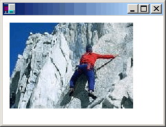

Отрисовка, позиционирование и клонирование изображений в GDI+
Можно использовать Bitmap класс для загрузки и отображения растровых изображений и может использовать Metafile класс для загрузки и отображения векторных изображений. Bitmap И Metafile классы наследуют от Image класса. Чтобы отобразить векторного изображения, вам потребуется экземпляр Graphics класс и Metafile. Чтобы отобразить растровое изображение, требуется экземпляр Graphics класс и Bitmap. Экземпляр Graphics класс предоставляет DrawImage метод, который получает Metafile или Bitmap в качестве аргумента.
Типы файлов и клонирование
В следующем примере кода показано создание Bitmap из файла Climber.jpg и отображает точечный рисунок. Конечная точка верхнего левого угла изображения, (10, 10), указанный в второй и третий параметры.
Bitmap myBitmap = new Bitmap("Climber.jpg");
myGraphics.DrawImage(myBitmap, 10, 10);
Ниже показано изображение.

Вы можете создать Bitmap объекты из различных графических форматов файлов: BMP, GIF, JPEG, EXIF, PNG, TIFF и значок.
В следующем примере кода показано создание Bitmap объекты из различных типов файлов, а затем отображает точечные рисунки.
Bitmap myBMP = new Bitmap("SpaceCadet.bmp");
Bitmap myGIF = new Bitmap("Soda.gif");
Bitmap myJPEG = new Bitmap("Mango.jpg");
Bitmap myPNG = new Bitmap("Flowers.png");
Bitmap myTIFF = new Bitmap("MS.tif");
myGraphics.DrawImage(myBMP, 10, 10);
myGraphics.DrawImage(myGIF, 220, 10);
myGraphics.DrawImage(myJPEG, 280, 10);
myGraphics.DrawImage(myPNG, 150, 200);
myGraphics.DrawImage(myTIFF, 300, 200);
Bitmap Класс предоставляет Clone метод, который можно использовать для создания копии существующего Bitmap. Clone Метод имеет параметр источника прямоугольник, который можно использовать для указания часть исходного точечного рисунка, который требуется скопировать. В следующем примере кода показано, как создать Bitmap путем клонирования в верхней части существующего Bitmap. Затем оба изображения отображаются.
Bitmap originalBitmap = new Bitmap("Spiral.png");
Rectangle sourceRectangle = new Rectangle(0, 0, originalBitmap.Width,
originalBitmap.Height / 2);
Bitmap secondBitmap = originalBitmap.Clone(sourceRectangle,
PixelFormat.DontCare);
myGraphics.DrawImage(originalBitmap, 10, 10);
myGraphics.DrawImage(secondBitmap, 150, 10);
На следующем рисунке два изображения.